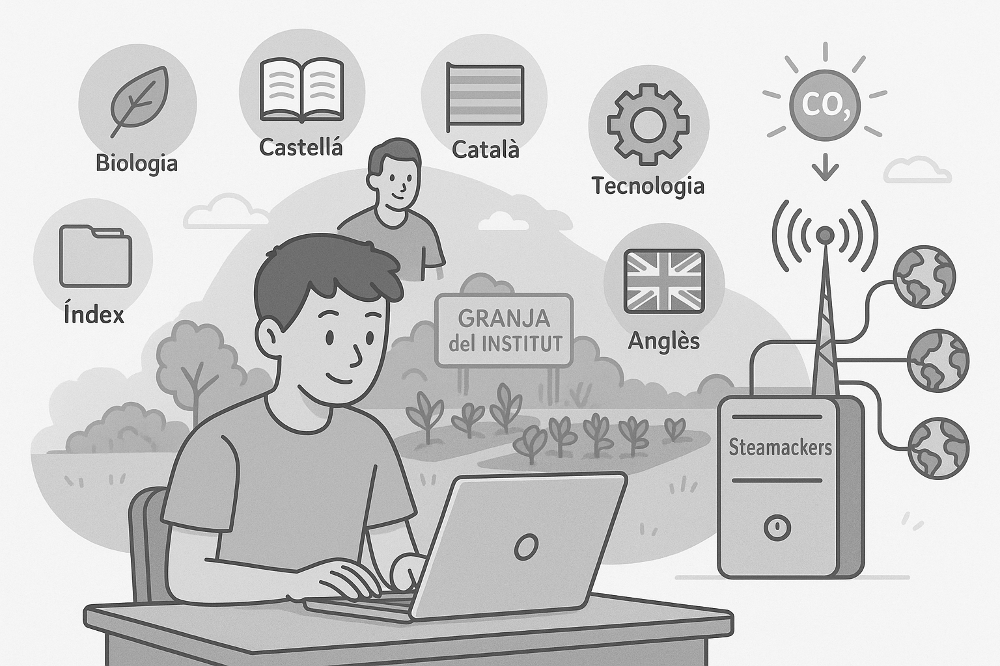

Hoy he terminado de programar lo esencial para mi página web. He colocado Biología, Castellano, Catalán, Tecnología, Índice e Inglés, y he puesto todo lo que tenía atrasado. También he añadido la imagen para Biología, que representa el bajo consumo energético. Ayer Jordi me enseñó lo necesario para comenzar. Más adelante, crearemos una granja en el huerto del instituto. Si hay tiempo, haremos un servidor con Steamackers, conectado al Wi-Fi. Me gustaría conectar varias IAs, aunque aún no sé para qué exactamente.
Hoy probé el sensor de temperatura y humedad, ya que vienen juntos en uno. Usé también el medidor de humedad de tierra, pero marcaba cero todo el rato. El detector de luz funcionaba correctamente. El sensor de humedad servirá para activar la bomba de agua según lo que necesiten las plantas. Probablemente probaremos otros sensores. También queremos usar transmisores LoRa para enviar información. Por ley, debe hacerse cada 1 a 3 minutos.
Hoy intentamos programar el LoRa con las placas, pero fue un caos porque no sabíamos cómo. Mañana veremos cómo transferir los datos desde el huerto a la placa base. Usaremos un JSON para automatizar el sistema. Queremos conectar una batería externa y quizá paneles solares. El LoRa tiene restricciones y solo puede enviar cada 2 a 5 minutos. Me dio pereza escribir hoy, tengo mucho sueño.
Conectamos el sistema LoRa con la placa base y por fin recibimos datos reales. Fue emocionante porque hasta ahora todo eran pruebas sueltas. Encendimos el sistema y empezó a enviar información como esperábamos. Algunos sensores funcionaban y otros no, así que los cambiamos. También conectamos la batería externa. El sistema funcionó con una pequeña demora, pero dentro de lo permitido. Vamos viendo cómo el proyecto toma forma.
Hoy dimos un paso importante al trabajar con Apps Script. Creamos un script que recibe los datos del LoRa y los organiza en Google Sheets. Así centralizamos toda la información y la podemos ver fácilmente. Luego conectamos esa hoja con nuestra página web para mostrar los datos en tiempo real. Pudimos unir las tres partes: LoRa, Apps Script y la web. Fue un día muy productivo, aunque aún queda trabajo por hacer.
Hoy ajustamos detalles en la hoja de cálculo y la conexión con la web. Mejoramos la presentación de los datos para que sea más clara y visual. También corregimos errores en los nombres de los sensores. Seguimos probando que todo funcione bien durante más tiempo. Hicimos pruebas de desconexión para ver si el sistema se recupera solo. Funcionó bastante bien, aunque aún hay margen de mejora.
Nos centramos en el diseño de la web para que los datos del huerto se vean más bonitos. Cambiamos colores, tipos de letra y organizamos mejor las secciones. También añadimos gráficos para ver la humedad y temperatura con más claridad. Nos ayudó mucho tener los datos ya bien ordenados en Sheets. Seguiremos mejorando el aspecto visual. Todo esto hace que el proyecto sea más profesional.
Hoy instalamos un segundo sensor de humedad para comparar resultados. Lo colocamos en otra zona del huerto para ver si había diferencias. Funcionó bien y mostró que algunas partes necesitan más agua que otras. También revisamos el consumo de energía de todo el sistema. Parece que con la batería dura bastante, pero los paneles solares ayudarán mucho más. Mañana queremos probar la bomba de agua.
Probamos la bomba de agua conectada al sensor de humedad. Logramos que se active sola cuando baja de cierto nivel. Fue un momento clave porque ya tenemos el sistema casi completo. También hicimos una prueba con diferentes horarios de envío de datos. Decidimos que cada 3 minutos es suficiente y cumple con la ley. Todo empieza a estar automatizado y estable. Nos sentimos orgullosos del avance.
Hoy hicimos una revisión general del sistema. Verificamos sensores, conexión LoRa, batería, web y todo funcionaba correctamente. También redactamos un pequeño manual de uso para futuras personas que lo usen. Nos queda poco por hacer, solo pequeños ajustes. El sistema ya puede funcionar de forma autónoma. Ver el resultado final da mucha satisfacción. Ya estamos pensando en nuevos proyectos para seguir aprendiendo.
